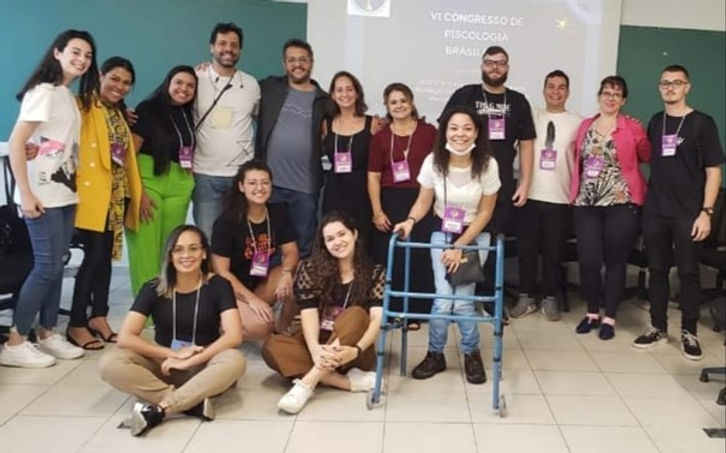
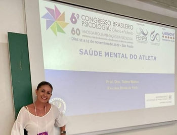
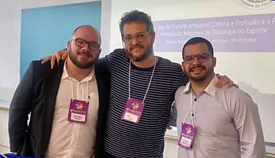
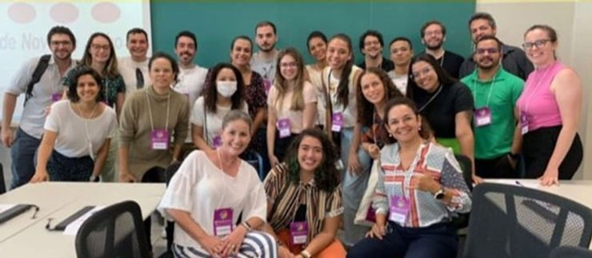
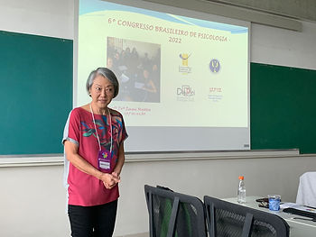

Novembro foi marcado por grandes eventos envolvendo a Psicologia e a Psicologia do Esporte. Entre os dias 11 a 15 de novembro de 2022, ocorreu o VI Congresso Brasileiro Psicologia (VI CBP): Ciência e Profissão evento organizado pelo Fórum de Entidades Nacionais de da Psicologia Brasileira (FENPB). O evento ocorreu no Memorial da América Latina e Universidade Nove de Julho (UNINOVE) – Campus Memorial. O CBP cumpre um relevante papel ao reunir os mais diversos setores do fazer “psi” e nas contribuições que a Psicologia pode oferecer em termos de transformações sociais que visem o bem comum.
O evento contou com a presença de associados que representaram a ABRAPESP através de apresentação de pôsteres, comunicações orais, seminários, mesas redondas, simpósios e conferências. Nove associados contaram com o apoio financeiro do Conselho Federal de Psicologia para participarem do evento, são eles: Rodrigo Pieri (RJ), Telma Matos (MG), Aline Amorim (MA), Rodrigo Damasceno (PI), Emmi Myotin (MG), Isadora Oliveira (GO), Ricardo Piccoli (SP) e Maria Emília Miranda Álvares (MA) e Cristianne Carvalho (MA).
Em depoimento, nosso presidente, Rodrigo Pieri, nos conta:
“No IV CBP vi muitos trabalhos sobre Psicologia do Esporte. Tivemos diversos trabalhos representando a ABRAPESP e também pudemos conhecer e nos conectar com muita gente nova. Percebi temas atuais e importantes sendo apresentados por uma nova geração da Psicologia do Esporte que vem muito forte. Acredito que a ABRAPESP possa acolher esta nova geração e ser renovada por ela, visto que muita gente fez questão de se associar. Ou seja, novos ares e novos temas. A ABRAPESP precisa ser sempre isso: coletiva e em constante renovação”.

Telma Matos, participou de mesas redondas, comunicação oral e apresentação de pôster com temas bastante pertinentes, entre eles: Saúde mental dos atletas na pandemia, Formação e atuação em Psicologia do Esporte, além de apresentar os resultados desenvolvidos em seu projeto de extensão.

“O evento foi extremamente importante para mim enquanto psicóloga do esporte e membro da ABRAPESP. Pude identificar a psicologia do esporte através de vários cenários, não limitado apenas ao esporte de alto rendimento. Acredito que o evento tenha sido de grande relevância, já que pudemos evidenciar o impacto da psicologia do esporte no cenário brasileiro”.
Ricardo Picoli também marcou presença participando do simpósio: A Psicologia do Esporte enquanto ciência e profissão e o papel da Associação Brasileira de Psicologia do Esporte no qual ficou responsável por apresentar a Revista Brasileira de Psicologia do Esporte (RBPE) e da mesa redonda: A Psicologia do Esporte Brasileira e a pluralidade das abordagens das práticas profissionais. Em declaração, ele reforça a importância da ABRAPESP e a necessidade de se inserir a Psicologia do Esporte na matriz curricular do curso de Psicologia.

“Mais de dez estudantes e recém-formados se interessaram em estar no simpósio e não sabiam sequer da existência da ABRAPESP. Após informados, ficaram vidrados com a possibilidade de filiação já como estudantes em busca de experiências de atuação. A outra coisa foi que, passa ano, os relatos continuam parecidos: não tive Psicologia do Esporte na grade da minha graduação. No meu trabalho, a relevância de uma especialização desse tipo se mantém. Como pesquisador e especialista em Psicologia do Esporte, vejo que usamos pouco o espaço que a RBPE nos dá para expormos nossas experiências e vivências.”
Nossa associada Isadora Oliveira, participou do simpósio: Psicologia do Esporte no Brasil: Da formação à atuação, por onde andamos? e da comunicação oral: Avaliação da coesão em atletas de handebol atuantes em equipes de alto rendimento no Brasil. Para ela, o evento é entendido como grande oportunidade de crescimento profissional e pessoal:
“Pude não só compartilhar com outros congressistas aquilo que venho construindo de conhecimento ao longo dos últimos anos, como também ter a oportunidade de aprender com grandes nomes da Psicologia do Esporte no cenário nacional, que atuam em diversas regiões do Brasil, sobre a pluralidade de possibilidades da atuação. Foi muito gratificante poder ver que mesmo em um congresso com tantas atividades simultâneas e de áreas diferentes, as atividades da ABRAPESP estiveram sempre cheias e com pessoas interessadas nos temas apresentados. Saí do CBP totalmente revigorada para minha atuação profissional e muito grata por ter participado de trocas tão ricas durante os quatro dias de congresso.”


Emmi Myotin participou da mesa redonda intitulada A Psicologia do Esporte Brasileira e a Pluralidade das Abordagens das Práticas Profissionais juntamente com Rodrigo de s Pieri e Telma Matos, que articularam a Psicologia do Esporte com a Psicologia Analítica e Psicologia Cognitiva Comportamental, respectivamente, enquanto Emmi trouxe a perspectiva da Psicologia Social. Ela, que trabalha há mais de 10 anos na área destacou:
“A temática da mesa divulgou abordagens diversas que podem ser utilizadas na prática da PE, demonstrando pelo menos três possibilidades de intervenção. (…) Foi prazeroso ver tanta gente interessada em PE, não só assistindo às palestras, mas também com perguntas e intervenções, tornando-se difícil encerrar a mesa. Na minha opinião, nessa apresentação, atingimos o objetivo de, não só difundir a PE, mas também dar visibilidade a área. (…) Essa experiência me incentivou a continuar minhas pesquisas e divulgá-las para os interessados na área.”
Simultaneamente ao VI CBP ocorreu o XIX Congresso Brasileiro e XII Congresso Internacional de Psicologia do Esporte e do Exercício (CONBIPE) na Barra da Tijuca, no Rio de Janeiro. Nesta edição, o evento contou com dois palestrantes internacionais e dezoito palestrantes nacionais (especialistas, mestres ou doutores), além da participação de técnicos e atletas olímpicos e paralímpicos. Diversos associados estiveram presentes, entre eles: Adriana Amaral, Marta Magalhães, Everton Santana e Fernanda Rodrigues.